Sinais de trânsito do Reino Unido, explicados em português
O que significa cada sinal e como se diz em inglês. A Signo é uma app para iPhone com 136 sinais e 535 frases para conduzir no Reino Unido, explicados em português.
Descarregar na App StoreGrátis: 3 temas de sinais e 25 palavras sobre as peças do carro. O Signo Pro desbloqueia tudo.


Aprenda como num jogo
Conhece o sinal? Deslize para a direita; se não, para a esquerda e ele volta. Ouça cada nome em inglês com voz britânica e faça um teste rápido.
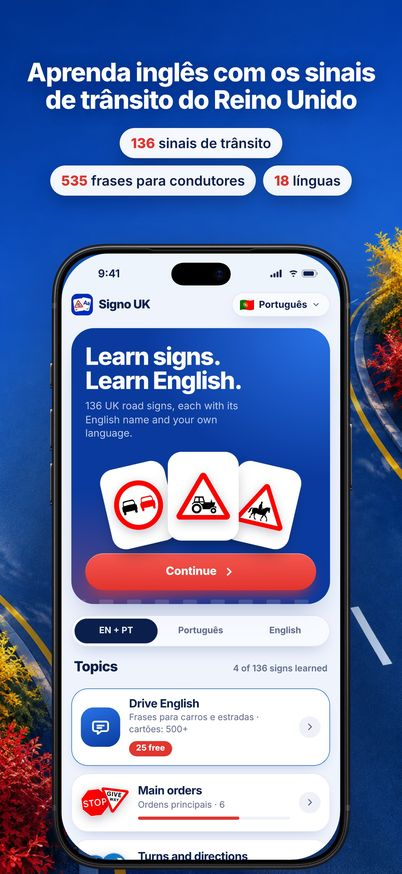
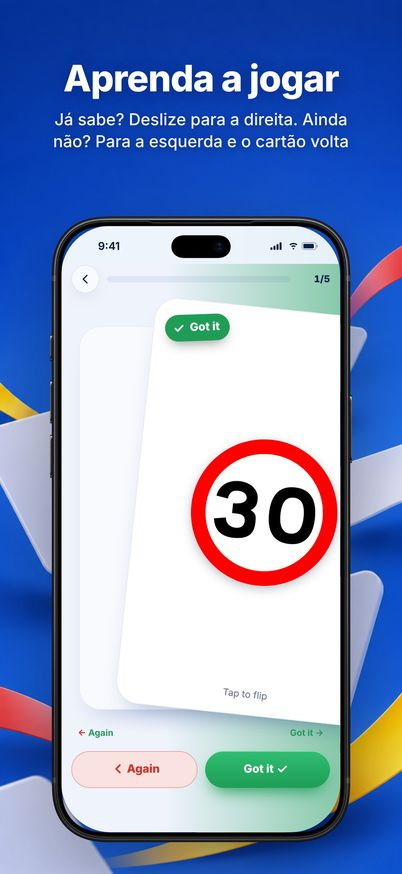
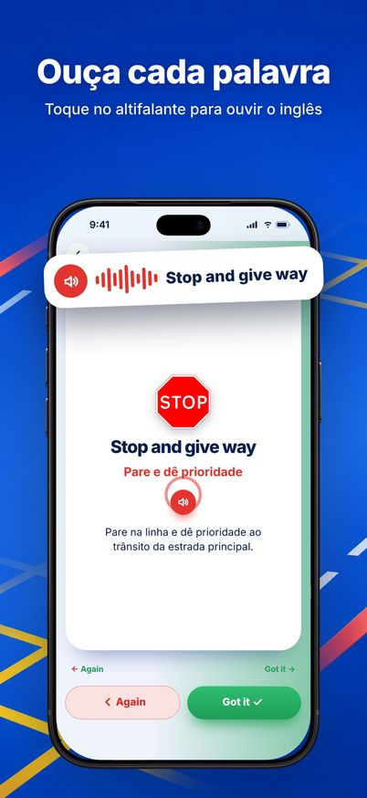
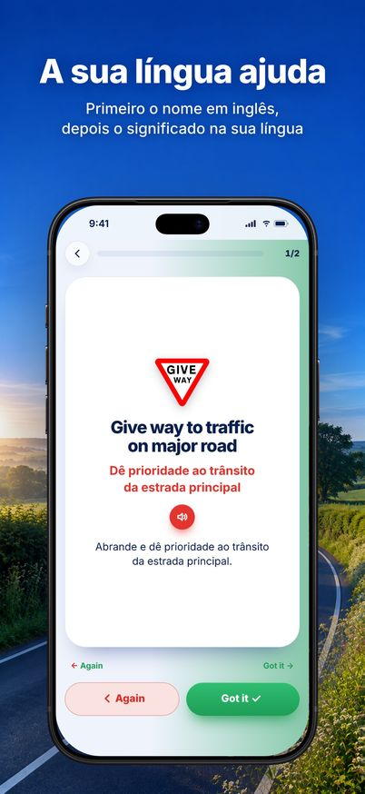
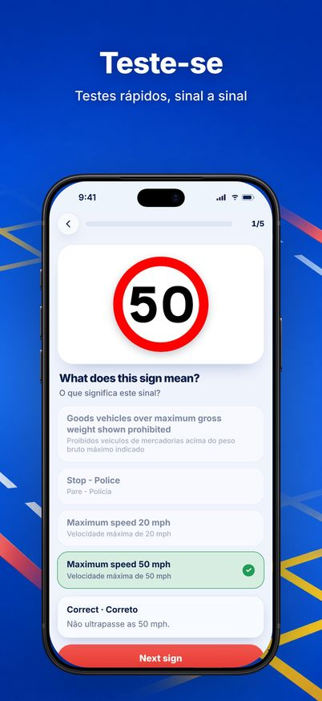
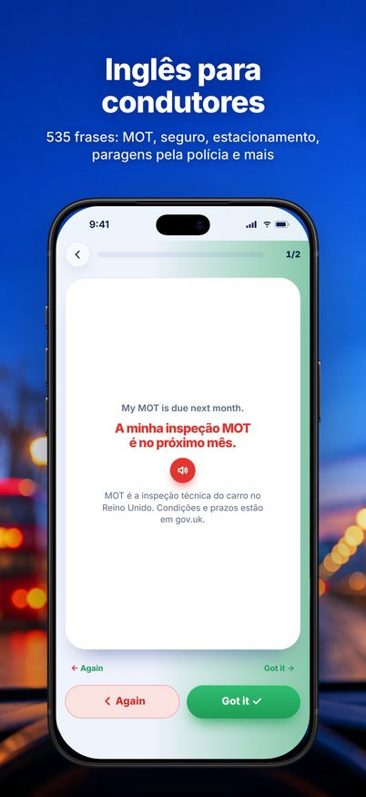
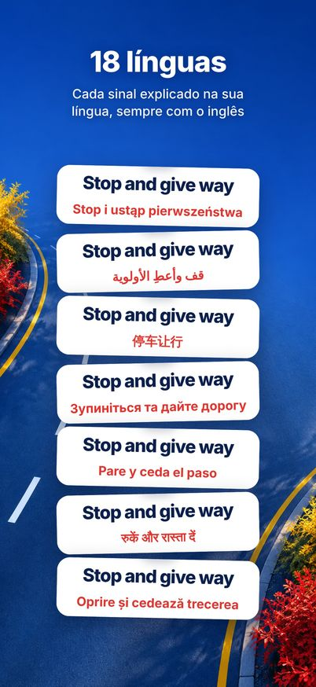
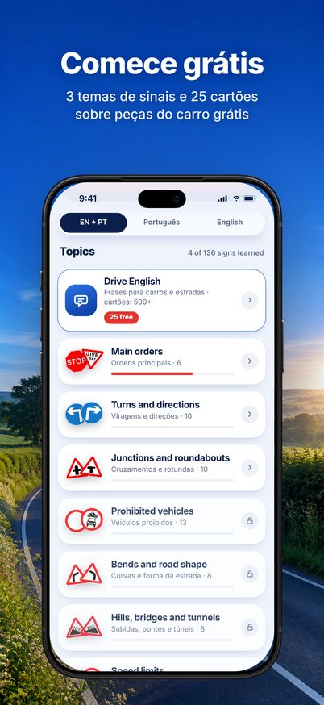
Sinais comuns e o seu significado
Toque num sinal para ver a explicação.
- Pare e dê prioridadeStop and give way
 Dê prioridade ao trânsito da estrada principalGive way to traffic on major road
Dê prioridade ao trânsito da estrada principalGive way to traffic on major road Proibido o acesso a veículosNo entry for vehicular traffic
Proibido o acesso a veículosNo entry for vehicular traffic Aplica-se o limite de velocidade nacionalNational speed limit applies
Aplica-se o limite de velocidade nacionalNational speed limit applies- Velocidade máxima de 30 mphMaximum speed 30 mph
 Velocidade máxima de 20 mphMaximum speed 20 mph
Velocidade máxima de 20 mphMaximum speed 20 mph Velocidade máxima de 40 mphMaximum speed 40 mph
Velocidade máxima de 40 mphMaximum speed 40 mph Velocidade máxima de 50 mphMaximum speed 50 mph
Velocidade máxima de 50 mphMaximum speed 50 mph Velocidade máxima de 60 mphMaximum speed 60 mph
Velocidade máxima de 60 mphMaximum speed 60 mph Entrada numa zona de 20 mphEntry to 20 mph zone
Entrada numa zona de 20 mphEntry to 20 mph zone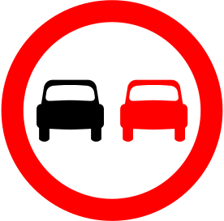
Proibido ultrapassarNo overtaking Proibido virar à direitaNo right turn
Proibido virar à direitaNo right turn Proibido virar à esquerdaNo left turn
Proibido virar à esquerdaNo left turn Proibido inverter a marchaNo U-turns
Proibido inverter a marchaNo U-turns Mantenha-se à esquerdaKeep left
Mantenha-se à esquerdaKeep left Mini-rotundaMini-roundabout
Mini-rotundaMini-roundabout- Rotunda mais à frenteRoundabout ahead
 Proibida a circulação de todos os veículosAll vehicles prohibited
Proibida a circulação de todos os veículosAll vehicles prohibited Proibida a circulação de veículos a motorNo motor vehicles
Proibida a circulação de veículos a motorNo motor vehicles Proibido parar na faixa principalNo stopping on main carriageway
Proibido parar na faixa principalNo stopping on main carriageway Via reservada a autocarros, bicicletas e táxisRoute for use by buses, pedal cycles and taxis only
Via reservada a autocarros, bicicletas e táxisRoute for use by buses, pedal cycles and taxis only Entrada numa zona de estacionamento controladoEntrance to controlled parking zone
Entrada numa zona de estacionamento controladoEntrance to controlled parking zone Apenas para titulares de licençaPermit holders only
Apenas para titulares de licençaPermit holders only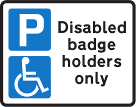
Apenas para titulares de cartão de deficienteDisabled badge holders only Local de estacionamentoParking place
Local de estacionamentoParking place Radares de velocidadeSpeed cameras
Radares de velocidadeSpeed cameras Pare - PolíciaStop - Police
Pare - PolíciaStop - Police Ponto a partir do qual se aplicam as regras de autoestradaPoint at which motorway regulations start to apply
Ponto a partir do qual se aplicam as regras de autoestradaPoint at which motorway regulations start to apply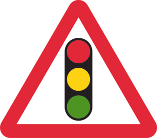
Semáforos mais à frenteTraffic signals ahead PassadeiraZebra crossing
PassadeiraZebra crossing Crianças a caminho ou à saída da escola ou do parque infantil mais à frenteChildren going to or from school or playground ahead
Crianças a caminho ou à saída da escola ou do parque infantil mais à frenteChildren going to or from school or playground ahead Obras na estradaRoad works
Obras na estradaRoad works Estrada escorregadiaSlippery road
Estrada escorregadiaSlippery road Passagem de nível com cancela ou barreira mais à frenteLevel crossing with gate or barrier ahead
Passagem de nível com cancela ou barreira mais à frenteLevel crossing with gate or barrier ahead Passagem de nível ferroviária sem cancela ou barreira mais à frenteRailway level crossing without gate or barrier ahead
Passagem de nível ferroviária sem cancela ou barreira mais à frenteRailway level crossing without gate or barrier ahead Dê prioridade aos veículos que vêm em sentido contrárioGive priority to vehicles from opposite direction
Dê prioridade aos veículos que vêm em sentido contrárioGive priority to vehicles from opposite direction Prioridade sobre os veículos em sentido contrárioTraffic has priority over oncoming vehicles
Prioridade sobre os veículos em sentido contrárioTraffic has priority over oncoming vehicles Proibidos veículos acima da altura indicadaNo vehicles over height shown
Proibidos veículos acima da altura indicadaNo vehicles over height shown Entroncamento em T mais à frenteT-junction ahead
Entroncamento em T mais à frenteT-junction ahead Cruzamento mais à frenteCrossroads ahead
Cruzamento mais à frenteCrossroads ahead Estrada de via únicaSingle track road
Estrada de via únicaSingle track road Local de cruzamentoPassing place
Local de cruzamentoPassing place
As peças do carro em inglês
25 palavras do capítulo gratuito Drive English. Toque numa palavra para a ouvir.
Os 136 sinais estão na app
Grátis: 3 temas de sinais e 25 palavras sobre as peças do carro. O Signo Pro desbloqueia tudo.